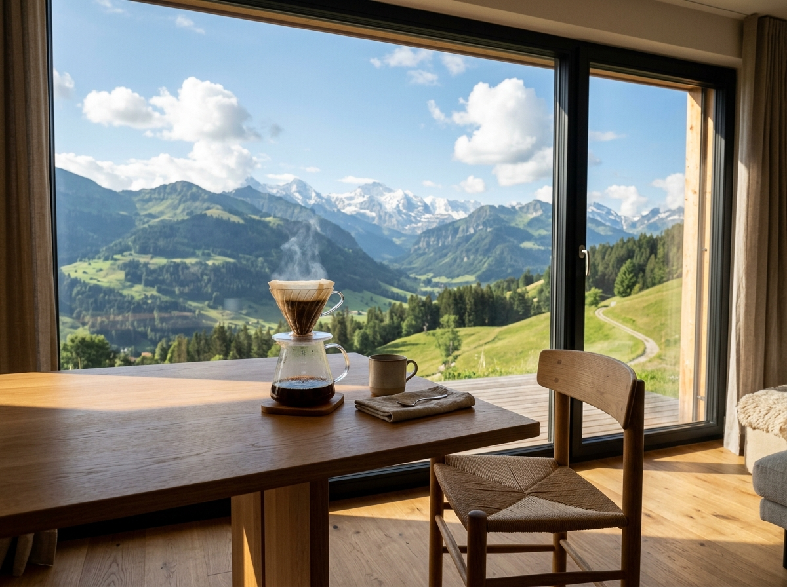

專為想擺脫厚重視線負擔、追求極致清晰度的高度近視與視力受損患者量身打造。我們融合醫學嚴謹與極簡時尚，提供高階白內障微創、全飛秒近視雷射與醫學精準配鏡。
視力矯正滿意度
年眼科醫學中心專精經驗
例成功微創與配鏡案例
高規格醫療標準・一站式視力重塑

飛秒雷射切口 ✕ 高階多焦人工水晶體
SMILE Pro 10秒微創・高度近視晶體植入
德國蔡司3D瞳孔定位 ✕ 國際極簡鏡框
結合前瞻醫療科技與簡約美學思維，滿足從青少年、高度近視者至長輩全年齡層的高品質視覺追求。
採用微米級飛秒雷射精準囊袋製作，搭配微創超音波晶體乳化儀，將混濁水晶體無痛置換為新一代高階人工水晶體。
引進微創 SMILE Pro 全飛秒雷射與 ICL 植入式微型鏡片技術，為高度近視與角膜偏薄患者提供安全、不切割角膜瓣的無瑕方案。
打破一般眼鏡行僅測度數的限制，融入眼底與雙眼視機能評估。精選極簡無螺絲鈦金屬鏡框，實現視覺清澈與日常穿搭品味。
我們理解厚重鏡片帶來的壓迫、眼睛縮小的困擾與運動起霧的種種不便。愛美眼科以專屬訂製方案，為您找回自由。
鼻樑深邃紅印、鏡片厚重造成視物縮小變形，摘下眼鏡宛如處在五里霧中，常伴隨視力疲勞與偏頭痛。
喜愛戶外生活卻受制於眼鏡滑落；長時間配戴隱形眼鏡引起角膜缺氧、紅腫乾澀，甚至反覆發炎無法再戴。
過去曾至一般診所諮詢被告知角膜厚度不足，對傳統切削角膜瓣手術存有安全疑慮與恐懼。
不切削角膜組織，將具備高度生物相容性之 Collamer 膠原聚合物鏡片植入後房，專為高度近視與角膜偏薄患者而生，高清畫質隨時可取回。
僅約2mm筆尖微創切口，完整保留角膜表層與神經完整性，大幅降低術後乾眼反應，運動愛好者重獲無拘束自由。
專屬眼科醫師眼底斷層健康把關，搭配雙面非球面超薄鏡片與人體工學超輕鏡架，徹底擺脫厚重呆板外觀。
透過智慧演算模型，為您即時評估近視矯正適應度、挑選理想眼鏡鏡片，並提供白內障水晶體選配建議。
您的度數屬於中高度近視範疇，結合您對戶外運動與快速恢復的追求，SMILE Pro 僅 2mm 微創傷口，單眼僅需約 8~10 秒，保留角膜高穩定性，非常適合您擺脫眼鏡。
我們嚴選符合純粹白色系診所美學的當代極簡與時尚框型：
現代極簡・商務首選
現代時尚・完美藏厚度
簡約純粹・輕薄視野
文藝氣質・修飾輪廓
重量僅約 3.8g，無螺絲卡榫專利鉸鏈，極度輕盈，適合高度近視與全天候配戴者。
人工水晶體決定白內障手術後未來的用眼品質，請選擇最符合您的生活方式：
希望閱讀、用手機、開車都一目了然
夜間眩光低、兼顧中遠距離平滑轉換
高性價比、看風景開車極致清晰
讓您同時擁有看遠(開車看電視)、看中(電腦烹飪)、看近(手機閱讀)的全方位視力，術後絕大多數患者可完全擺脫老花眼鏡。
切換不同視力狀態，感受脫離眼鏡後的晶亮生活：
* 本模擬器僅供視覺理解體驗，實際視力狀況以門診儀器檢查結果為準。
我們斥資引進德國與瑞士原廠頂級儀器，以微米級的精準規格守護每一位患者的寶貴靈魂之窗。
單眼雷射時間僅需 8~10 秒，具備精準視軸與散光自動定位導航，手術過程舒適快速。
3D 旋轉式掃描測量角膜前後表面、厚度分佈與高階像差，精確篩選高度近視與圓錐角膜風險。
主動式液壓維持眼壓穩定，大幅減少手術能量震盪，保護角膜內皮細胞，術後當天即可返家。
配置 9 顆精密校正鏡頭，一次捕捉 180 度眼位數據、鏡框面彎與眼傾角，達成無稜鏡差配鏡。
結合國內知名醫學中心主任級資歷、萬例手術成功經驗，給您最高規格的專業安心感。
每一份重現光明的心得，都是我們堅持現代專業與美學的初衷。
「近視950度加上散光，戴了快20年厚眼鏡，鼻樑常被壓紅。林院長評估後做 SMILE Pro，十幾秒就結束，隔天醒來看到時鐘指針那瞬間真的激動想哭！純白院所像精品店一樣放鬆。」
「白內障逐漸霧化讓我甚至不敢夜間開車，陳醫師非常細心解釋多焦點水晶體。做完手術當天就恢復視力，現在看手機、看電視開車都不用老花眼鏡，色彩鮮明像換了新電視！」
「因為工作需要大量看螢幕與出差，本來只想去一般眼鏡行，經朋友推薦來愛美配鏡。蔡司3D儀器測量精準無比，配的極簡鈦框輕到像沒戴，頭痛完全改善，醫師驗光真的不一樣！」
無論您想脫離厚重眼鏡、評估微創近視手術、諮詢高階白內障置換，或預約專業醫學驗光配鏡，愛美眼科醫療團隊皆為您提供一對一嚴謹服務。
0800-888-999 / (02) 2700-1141
台北市大安區敦化南路一段 115 號 (捷運忠孝敦化站 8 號出口)
週一至週六 09:00 - 12:30 / 14:00 - 21:00 (週日例休)
感謝您的填寫！愛美眼科專責醫療諮詢師將儘速與您致電聯繫確認。